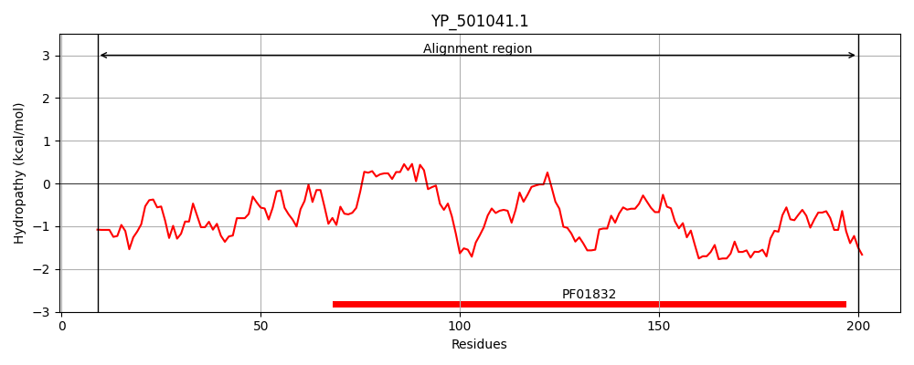
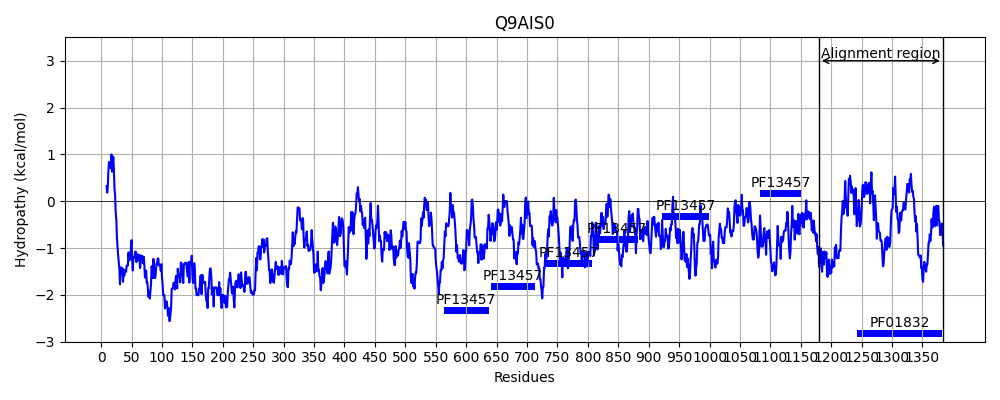
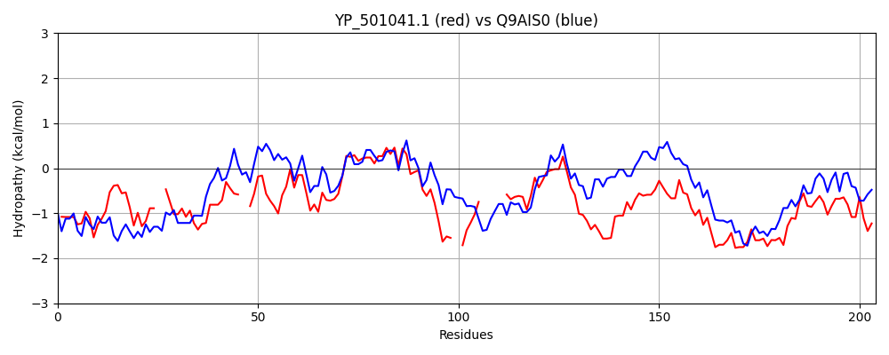

Hit Accession: Q9AIS0
Hit TCID: 1.C.105.2.6
Hit Description: gnl|BL_ORD_ID|17738 gnl|TC-DB|Q9AIS0|1.C.105.2.6 Fibronectin binding autolysin OS=Staphylococcus caprae GN=atlC PE=4 SV=1
Mach Len: 204
e:0.000000
Query TMS Count : 0
Hit TMS Count: 0
TMS-Overlap Score: 0.000000
Predicted Substrates:CHEBI:25367;molecule
BLAST Alignment:
Score: 440 , Bit scores: 174 bits, E-value: 3.7e-50, Alignment length: 204, Percentage identity: 48
Query: 9 QTKEEDGKFVEANNNEIAKAMTISH--KDNDMKYMDITEKVPMSES--EVNQLLKGKGILENRGKVFLEAQEKYEVNVIYLVSHALVETGNGKSELAKG--IKDGK------KRYYNFFGIGAFDSSAVRSGKSYAEKEQWTSPDKAIIGGAKFIRNEYFENNQLNLYQMRWNPENPAQHQYASDIRWADKIAKLMDKSYKQFG 200
Q ++ G++ AN NEI AM + KD+ +Y + P S S +N+LLKG+G+LE +G F EA +KY +N IYLV+HALVETGNG S+LAKG I +GK +Y+N FGIGA+DSS + G YA+ W S KAIIGGAKFI Y + Q LY+MRWNP NP HQYA+DI WA A+ + Y + G
Sbjct: 1180 QIQKVPGQWTNANYNEIKDAMDPNKLTKDSGARYQFLRLDQPQSLSVAALNELLKGQGVLEGQGAAFSEAAKKYGINEIYLVAHALVETGNGTSQLAKGGDIVNGKFSDKTKTKYHNVFGIGAYDSSPLIEGIKYAKNAGWDSVSKAIIGGAKFIGQSYIKAGQNTLYKMRWNPSNPGTHQYATDIHWATVNAQTIKGFYDKIG 1383 | Protein Hydropathy Plots: |
|---|
|  |  |
Pairwise Alignment-Hydropathy Plot:
|
|---|
|  |